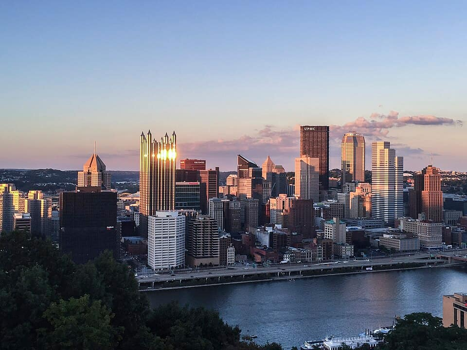

212 places · 6 areas · every one sourced, pinned and status-checked · last checked · 4 closed, kept for the record. Ordered by tier, then by number of named sources. How we choose

A guide in 6 areas · every place recommended by name
pierogi · fish sandwich · Point State Park & the Fort Pitt Museum
The tip of the Golden Triangle where the Allegheny and Monongahela meet to form the Ohio, marked by a giant fountain, with the Fort Pitt Museum telling the French-and-Indian-War story on the very spot.
Your guide’s note Park free and always open; fountain runs in season. Museum (Heinz History Center-run) daily 10–5.
601 Commonwealth Pl
Recommended by , , +1,
2Must seewithin Downtown, North Shore & North Side
Seven floors devoted to Pittsburgh-born Andy Warhol — the largest single-artist museum in North America, from the soup cans to the floating Silver Clouds room.
Your guide’s note Admission charged; some seasons half-price Friday evenings. Closed Tuesdays.
117 Sandusky St, North Shore
Recommended by , , +1,
3Must seewithin Downtown, North Shore & North Side
A museum of room-sized, permanent installation art you walk through — Yayoi Kusama's mirrored infinity room among them — in a former mattress warehouse on the North Side.
Your guide’s note Admission charged; closed Mon–Tue. Pair with a Mexican War Streets walk.
500 Sampsonia Way, North Side
Recommended by , ,
4Must seewithin Downtown, North Shore & North Side
Pennsylvania's largest history museum and a Smithsonian affiliate — six floors on Pittsburgh's steel, glass and sports story, the Heinz 57 kitchen, a real Mister Rogers set, and the Western PA Sports Museum.
Your guide’s note Admission charged. Allow 2–3 hours. In the Strip; combine with a food crawl.
1212 Smallman St, Strip District
Recommended by , ,
5Must seewithin Downtown, North Shore & North Side · Pittsburgh Classics
Pittsburgh's oldest bar and restaurant (1870), a historic landmark, famous for a giant breaded fish sandwich and breaded oysters from the original Mary Americus recipe.
Your guide’s note Walk-in; old-school counter, cash-friendly. A landmark, not just a meal.
20 Market Sq, Downtown
Recommended by , ,
6Must seewithin Downtown, North Shore & North Side · Markets
Pittsburgh's historic market district: a mile of ethnic grocers and food halls the city calls its essential food crawl, ranked among the top things to do in the whole city.
Your guide’s note Best Saturday mornings; much is closed Mondays. Permanent, publicly open. Approximate pin.
Penn Ave & Smallman St
Recommended by , ,
7Must seewithin Downtown, North Shore & North Side · Pittsburgh Classics
The 1933 Strip original of a Pittsburgh institution. The sandwich: grilled meat, provolone, oil-and-vinegar slaw and fries all stacked inside the Italian bread. Order it as-is.
Your guide’s note Open late; cash and cards. The other locations are fine, but this is the one.
46 18th St, Strip District
Recommended by ,
8Must seewithin Downtown, North Shore & North Side · Drinks
Pittsburgh's first distillery since Prohibition and one of the most-awarded craft distilleries in the country — hand-milled local grain, copper-pot whiskey and a Strip tasting room named for a whiskey-rebellion figure.
Your guide’s note Tastings and tours; buy a bottle. Approximate pin.
2401 Smallman St, Strip District
Recommended by ,
9Must seewithin Downtown, North Shore & North Side · Markets
An iconic Italian grocery since 1902 — 400-plus imported cheeses cut to order at the counter, plus olive oils, cured meats and pantry goods stacked to the ceiling.
Your guide’s note The cheese counter is the whole experience. Approximate pin.
2010 Penn Ave, Strip District
Recommended by ,
10Must seewithin Downtown, North Shore & North Side · Markets
The country's only congressionally-designated National Aviary — walk-through free-flight rooms with 500+ birds from penguins to a two-toed sloth — called 'hugely underrated' by National Geographic.
Your guide’s note Admission charged. Great with kids. Closed some holidays.
Four floors of hands-on science on the North Shore, plus a planetarium, the WWII submarine USS Requin moored outside, and the beloved Miniature Railroad & Village.
Your guide’s note Admission charged; the sub is a separate ticket. Busy on weekends.
A nationally-ranked hands-on museum for younger kids — a giant Waterplay hall, a Nursery, MAKESHOP tinkering, and Mister Rogers artefacts — beside the old Buhl planetarium.
Your guide’s note Admission charged; best for under-10s. Pair with the Warhol next door.
A free, riotously colourful found-art courtyard and house by folk artist Randy Gilson — one of the most joyful corners of the city, and an Atlas Obscura favourite.
Your guide’s note Free, outdoors, daytime. Approximate pin in the Mexican War Streets.
The world's largest bicycle museum and shop — some 4,000 bikes floor to ceiling, including the banana-seat Bowden Spacelander and bikes from films. Free, and gloriously overwhelming.
Your guide’s note Free. Part shop, part museum. Approximate pin near the Ohio River.
The city's hub for Black arts, culture and history in the Cultural District — galleries, a 500-seat theatre and 200+ performances a year — named for the Pittsburgh-born playwright.
Look for Galleries free; performances ticketed. Approximate pin.
A 1764 brick redoubt of Fort Pitt — the oldest structure in Western Pennsylvania and the only surviving piece of the fort — tucked inside Point State Park.
Your guide’s note Free and open to the public since 1895; run by the Fort Pitt Society, DAR. Approximate pin.
The northern terminus of the 150-mile GAP rail-trail to Cumberland, MD, where it links the C&O Canal towpath all the way to Washington, DC — the mile-zero medallion sits at the very Point.
Your guide’s note Free, always open; bike and kayak rentals nearby. The ride is the draw. Approximate pin.
A hilltop Troy Hill chapel holding the largest collection of Catholic relics in North America — some 5,000 of them, plus life-sized Stations of the Cross carved in Bavaria.
Your guide’s note Free; limited open hours — check ahead. Quietly astonishing. Approximate pin.
Widely called the most beautiful ballpark in America — an intimate riverfront park where the Pirates play against the full Downtown skyline framed beyond the outfield.
Your guide’s note Best on a game night; the riverwalk and Clemente Bridge views are free any time.
115 Federal St, North Shore
Recommended by , , Added by the guide (general knowledge)
A historic University of Pittsburgh research observatory in Riverview Park — one of the world's major astronomical observatories — offering free public tours (reservations required) April through October.
Your guide’s note Free; reserve ahead. ~4 miles north of Downtown. Approximate pin.
Twenty-five socially-charged 1937 and 1941 murals by Croatian immigrant Maxo Vanka on immigration, industry and social justice, covering the walls of a Millvale church.
Your guide’s note Docent-led tours by the Society to Preserve the Millvale Murals; reserve. Approximate pin.
24 Maryland Ave, Millvale
Recommended by ,
24Worth the detourwithin Downtown, North Shore & North Side · Cafe
The classic Pittsburgh breakfast: crepe-thin, crispy-edged 'hotcakes' rolled around fruit or chocolate. Obama liked them enough to fly the cooks to the White House.
Your guide’s note Cash only at some locations; breakfast/brunch. Expect a wait on weekends.
60 21st St, Strip District
Recommended by ,
Oakland & the East End76 places · area 2 of 6
South Side, Mount Washington & the West End17 places · area 3 of 6
South Hills & the Southwest23 places · area 4 of 6
Eastern Suburbs & River Valleys28 places · area 5 of 6
Day Trips & the Laurel Highlands13 places · area 6 of 6
How we choose
Every place is recommended by named sources (review-aggregator star ratings never count as the recommender), pinned to its door from a published coordinate, and status-checked. Closed places stay, flagged, so you know they’re gone.
Must see
The places to plan a visit around — graded within each area, not across the city.
Worth the detour
Strong picks, worth going out of your way for.
Deep cut
For the curious: smaller, odder, more local.
Within each area, places are ordered by tier, then by number of named sources — never by popularity. Numbers on the cards match the pins on the map. No ratings, prices or opening hours are shown, because the guide doesn’t hold verified ones.
111 sights and 101 places to eat, drink, shop & pick across Greater Pittsburgh, each traceable to the source that named it.
Filters
How this guide was made
How the food, markets & farms list works
Pittsburgh classics anchor it — the Primanti’s sandwich, pierogi, the burnt almond torte, soup dumplings. A cuisine tag needs a named dish; markets and farms must be genuinely visit-worthy and publicly open (see docs/SOURCES.md); anything tagged ADDED is general knowledge, verify it.
Web-searched and fact-checked
Found and cross-checked with web search across aggregator/guidebook rankings, the official institution sites, university visitor guides and the city’s local media (direct page fetches are blocked in the build environment). Ranked sources live in data/sources.json; the local-news map is data/local-media.json.
YouTube & creators
Pittsburgh gets heavy travel-vlog coverage — e.g. a “British Guy in Pittsburgh” tour of Mt Washington, Randyland and the museums, and 4K city tours. See the national creators catalogue in data/sources.json.